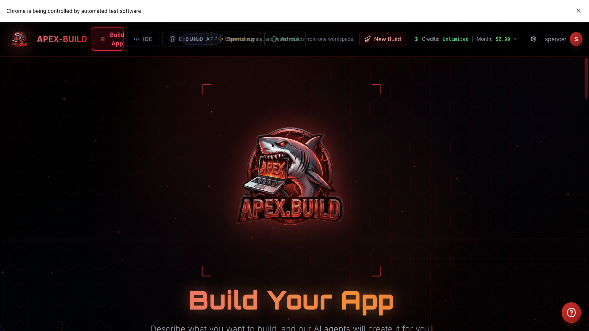
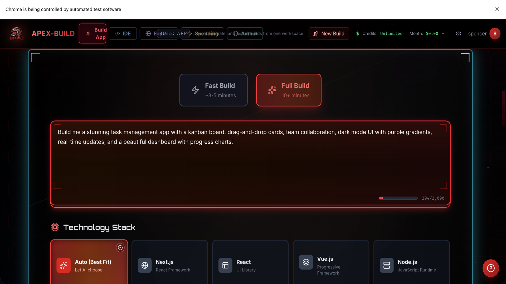
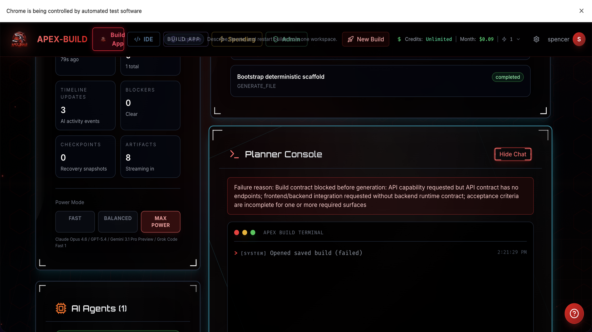
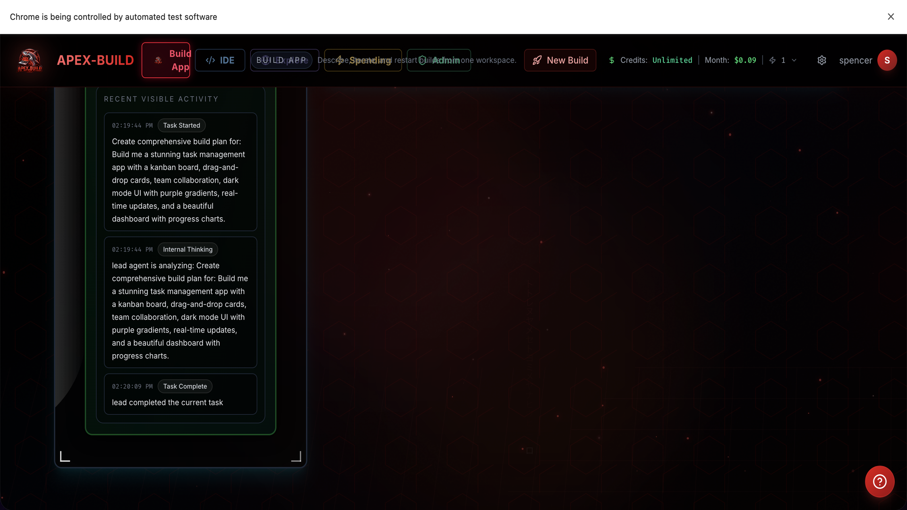
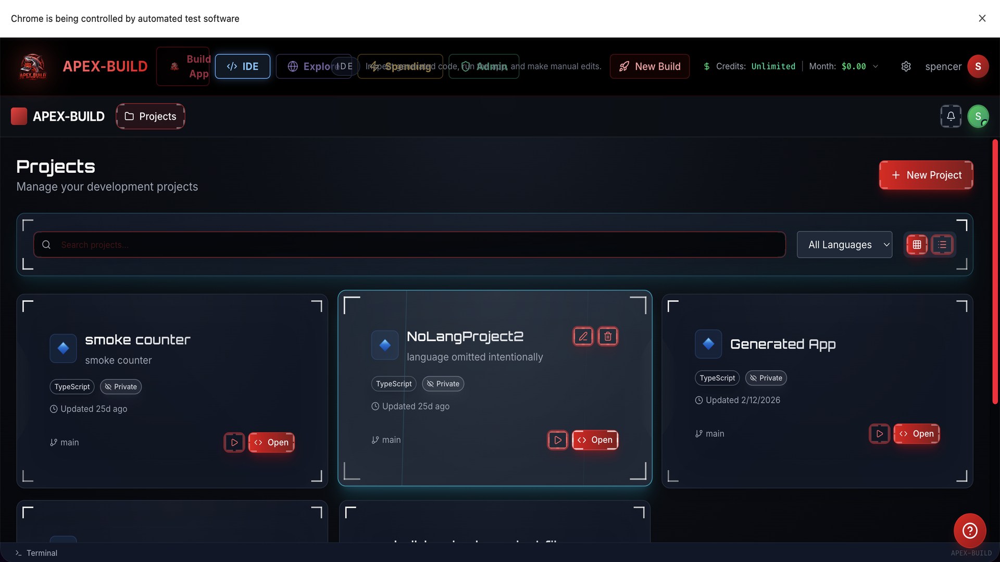

AI Cloud IDE + Multi-Agent Build Platform
Raise $10,000 to launch a platform designed to win the users current AI coding tools frustrate.
APEX-BUILD combines prompt-to-product generation, a real browser IDE, multi-provider AI routing, cost transparency, deployment, collaboration, and export ownership in one product. The wedge is simple: make switching from Replit, Bolt, and v0 easier than staying.
Current Offer
$10,000 for 5%
Implied post-money valuation: $200,000
Target Outcome
1,000 paying customers
Potential re-rating to $4.7M-$7.1M

Prompt to product from one workspace
Real-time orchestration visible to the user
Platform UI screenshot
Why This Exists
The product is built around the biggest user complaints in AI coding platforms.
APEX-BUILD is not just another wrapper around one model. It was designed to solve the most common reasons developers churn: opaque pricing, weak export, vendor lock-in, limited model choice, shallow Git support, and poor recovery when AI output breaks.
“I do not know what I am paying for.”
APEX-BUILD exposes provider, tokens, and spend in real time with hard budget controls.
“I am locked into one model.”
Users can route across Claude, OpenAI, Gemini, Grok, Ollama, and BYOK in one build.
“The app breaks and the AI cannot recover.”
Dedicated reviewer and solver roles create a real recovery ladder instead of blind retries.
“I cannot leave without losing work.”
Git export, deployment ownership, and migration flows reduce switching friction to near zero.
Workflow Story
Show the investor the whole journey from prompt to live product.
The screens below are built from current platform screenshots with guided overlays for presentation clarity. They show the exact workflow an investor needs to understand: describe, orchestrate, review, launch, and expand.

Describe the product in plain English
Choose model power mode and launch the build

Planner, architect, frontend, backend, database, testing, reviewer
Parallel work instead of one AI doing everything badly

Continuous progress, logs, and system decisions
Trust improves when the system explains itself live
Real IDE, real files, real preview
This is where retention happens after the first wow moment

Every build becomes a reusable asset, not a throwaway prompt
A migration wedge makes competitor switching deliberate
Presentation note: guided overlays added for investor readability
Agent Stack
The platform already has the depth that most “AI builders” fake.
Lead
Planner
Architect
Frontend
Backend
Database
Testing
DevOps
Reviewer
Solver
- Monaco IDE with preview, terminal, Git, package management, comments, and checkpoints.
- Model routing across major AI providers with fallback and cost-aware control.
- Ownership-first export story: deploy on the user’s account, push to the user’s repo.
- “Migrate from Replit” built as a direct acquisition channel, not a side feature.
Why We Can Win
APEX-BUILD attacks the exact category weaknesses that created the opening.
Replit, Bolt, and v0 proved the market wants AI-assisted app creation. The next winner will be the platform that combines ownership, flexibility, cost clarity, and better execution quality.
Key Decision Point
Typical frustration elsewhere
APEX-BUILD advantage
Model choice
One-model lock-in
Multi-provider routing plus BYOK
Pricing transparency
Credits disappear with no detail
Live spend ticker, budget caps, ledger history
Recovery quality
Single AI retries blindly
Reviewer + solver + repair loops
Code ownership
Export friction and hosting dependence
Git export and deployment on the customer’s account
Switching incentive
No easy migration path
Deliberate Replit migration wedge
AI coding is proven venture territory.
Competitors already proved there is real demand for AI-native development. APEX-BUILD’s bet is that the long-term winner looks more like a serious workspace than a glorified prompt box.
Built from direct product frustration, not trend chasing.
The platform was designed from real-world complaints: weak Git, hidden spend, missing ownership, shallow debugging, and poor migration options.
The IDE is the moat, not just the first prompt.
Once users build, preview, edit, deploy, collaborate, and track spend in one place, churn falls because the whole workflow is embedded.
Use Of Funds + 90-Day Plan
The $10,000 round is not for research. It is for launch execution.
The product already exists. This capital is meant to harden launch, keep the AI rails funded, formalize the business, and acquire the first wave of users with a clear migration-first story.
Use of funds
AI API credits and launch inference runway
$3,500
Claude, ChatGPT, Gemini, and Grok subscriptions
$1,200
LLC registration, accounting, launch admin
$1,400
Domain, hosting, email, monitoring, launch ops
$900
Launch content, paid ads, creator outreach
$2,200
Buffer for unexpected launch costs
$800
Total raise
$10,000
Launch timeline
Days 0-30
Polish + readiness
Finalize launch messaging, stabilize provider credits, tighten onboarding, finish investor demo, register the LLC.
Days 31-60
Acquire the first users
Push migration messaging, publish demos, run targeted creator outreach, capture early case studies.
Days 61-90
Paid launch + conversion loop
Drive trial-to-paid conversion, expand templates, collect retention signals, and prepare the follow-on round.
Optimistic but grounded model
Blended ARPU assumption: $49/month
The model below assumes APEX-BUILD converts a mix of solo builders, power users, and small teams into a blended $49 monthly revenue user. This is intentionally optimistic, but still within the range of premium developer SaaS pricing.
Customer count
MRR
ARR
8x-12x ARR value
What 5% is worth
100
$4,900
$58,800
$470K-$706K
$23.5K-$35.3K
500
$24,500
$294,000
$2.35M-$3.53M
$117.5K-$176.5K
1,000
$49,000
$588,000
$4.70M-$7.06M
$235K-$353K
2,500
$122,500
$1.47M
$11.76M-$17.64M
$588K-$882K
Why This Deal Can Matter
If launch works, the investor’s 5% moves from symbolic to meaningful very quickly.
At today’s implied $200,000 valuation, the check is simply the fuel to launch. If APEX-BUILD reaches 1,000 paying customers, that same 5% could plausibly be worth hundreds of thousands of dollars on a software multiple.
$10,000 buys 5%
Entry valuation implied by the current offer: $200,000 post-money.
1,000 paying customers materially changes the story.
At $588K ARR and a typical SaaS revenue multiple, 5% could be worth $235K-$353K.
$75,000 expansion option
If launch KPIs are hit, the lead investor gets first access to a proposed $75,000 follow-on opportunity for a larger stake before it is offered elsewhere.
What investors want to know
Why back this now?
- The product is already visibly real, not a pitch deck mockup with no software behind it.
- The category has already proven demand, but users still complain about cost opacity and lock-in.
- APEX-BUILD has a direct acquisition wedge: ownership, migration, and better AI flexibility.
- The $10,000 ask is small enough to be efficient and large enough to create launch momentum.
Closing message
Back the launch, not the dream phase.
APEX-BUILD is built. The task now is to register the business, fund the AI rails, acquire users, and prove retention. This round is about turning a working platform into a live business.